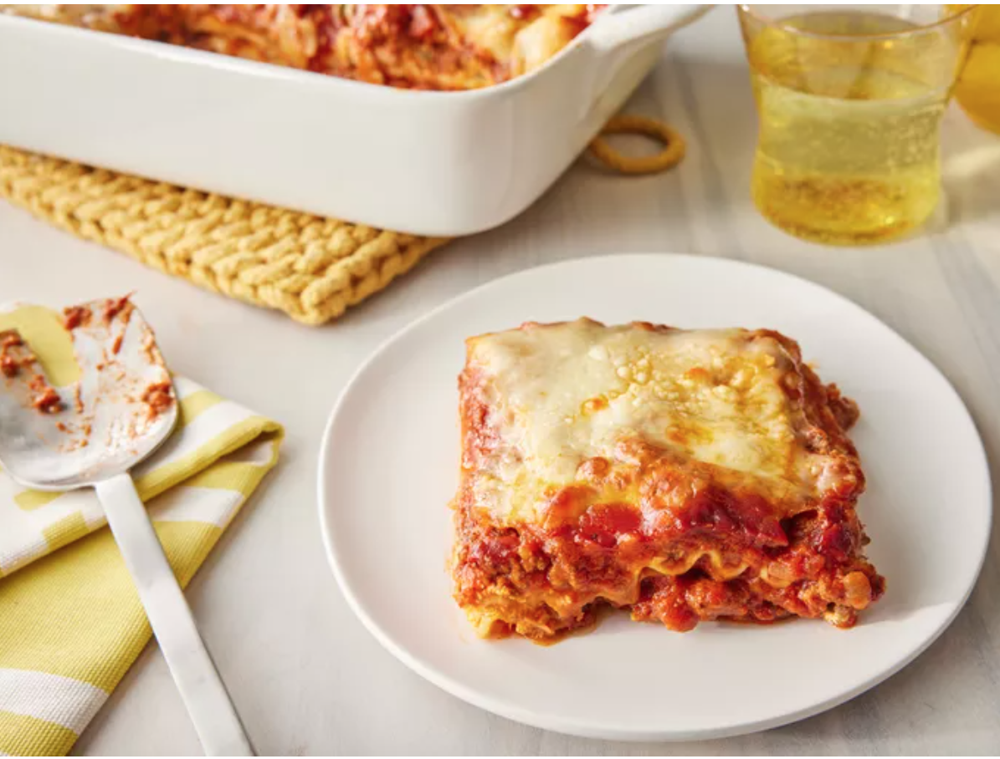

Лазанья

Описание
Лазанья – это традиционное блюдо итальянской кухни, а также вид тонких плоских листов пасты, которые используются для его приготовления.
Основу лазаньи составляют слои теста, чередующиеся с начинкой, такой как мясной фарш, овощи или грибы, и соусами (чаще всего томатным и соусом Бешамель), всё это запекается до золотистой корочки, а верхний слой посыпается сыром.
Ингридиенты
- Мясо : эта супермясная лазанья содержит сладкую итальянскую колбасу и нежирный говяжий фарш.
- Лук и чеснок : луковица и два зубчика чеснока готовятся вместе с мясом, что придает ему особый вкус.
- Томатные продукты : вам понадобится банка измельченных томатов, две банки томатного соуса и две банки томатной пасты.
- Сахар : две столовые ложки белого сахара добавят легкую сладость и усилят вкус соуса.
- Специи и приправы : этот рецепт лазаньи приправлен свежей петрушкой, сушеными листьями базилика, солью, итальянскими травами, семенами фенхеля и черным перцем.
- Лапша для лазаньи : используйте покупную или домашнюю лапшу для лазаньи .
- Сыры : пармезан, моцарелла и рикотта делают эту лазанью особенно изысканной.
- Яйцо : Яйцо помогает связать рикотту, чтобы она не вытекала из лазаньи, когда вы ее разрезаете.
Шаги:
- Приготовьте мясной соус.
- Приготовьте лапшу.
- Приготовьте смесь с рикоттой.
- Выложите лазанью слоями согласно инструкции рецепта.
- Накройте фольгой и запекайте
- Дайте лазанье отдохнуть перед подачей.